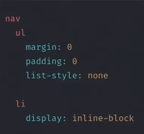
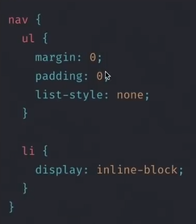
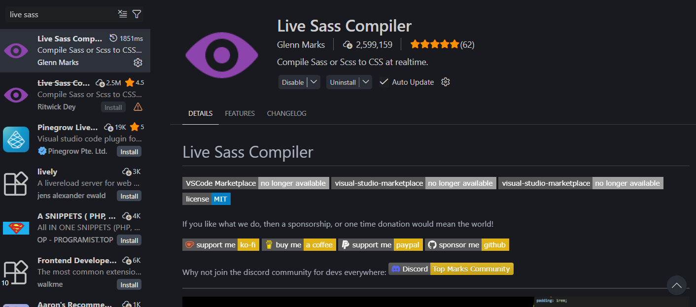

You just learned how to use SASS
What is SASS?
SASS is a preprocessor for CSS, abbreviation of "Syntactically Awesome Style Sheets" :D
for example:
This is SASS

Basically everything you write in SASS file will be compiled to CSS
There are so many CSS Preprocessor
- SASS
- Stylus
- PostCSS
- Less
- Stylecow
- etc.
Why we need to use SASS?
- Reduce repetitive code
- Make CSS more maintainable
- We can make variable inside SASS (New CSS can use variable too)
- We can use Operator
- Have Built-in function
- We can use Mixin
- We can use Nested CSS
- We can modify CSS framework, ex: Bootstrap, Materialize
Why we dont need to use SASS?
- For now, there are so many SASS features that available in CSS :v
- No need to use it for small project
- You can use Styled Component / CSS in JS
SASS vs SCSS
This is SASS

This is SCSS

How to use SASS?
-
Download SASS extension in Visual Studio Code

- Create Folder
- Create file html
- Link your CSS file to html file
- Create file SCSS
-
Click "Watch SASS" button which locate at the bottom bar of the vscode editor
- Edit your scss file, and congrats you just made your first SASS